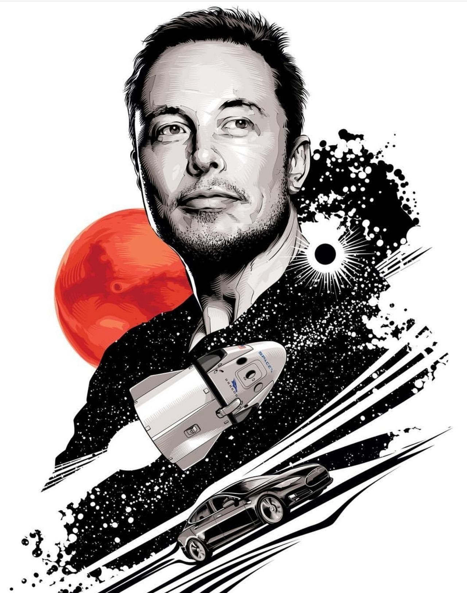

Hi!
I'm Sakshi Sunil Biradar I live in India, Maharashtra, Udgir. My father's name is Sunil Biradar and my mother's Vaishali Biradar, I have 2 brothers, my elder brother's name is Rudresh and my young brother's name is Veer and I'm the middle one.
I have so many hobbies reading, coding, and also drawing.
My favorite hobby
My favourite hobby
Reading Books

My favorite hobby is reading books. I read books at-least 2-3 hours a day. I enjoy reading there are several benefits of reading books such as strengthens the brain, builds vocabulary, prevents cognitive decline, reduces stress, aids sleep, alleviates depression, lengthens lifespan..
I read science books and also books on scientists.I also like to read storybooks because they provide a sense of imagination in your mind.
Favorite Character
My favorite character is
Elsa

About
Elsa was the queen of Arendelle before her sister Anna. Elsa has ice powers, she can create or destroy snow/ice .At first Elsa was afraid of the outside world because her parents warned her about it. But after coming outside the palace she understood the world very well and saved Arendelle for 2 times.
I like Elsa because she shown became a strong girl from an afraid one.
My Inspiraiton

My inspiration is Elon Musk, his full name is Elon Reeve Musk, he is a scientist, the founder, CEO, and Chief Engineer at SpaceX; early stage investor, CEO, and Product Architect of Tesla, Inc.; founder of The Boring Company; and co-founder of Neuralink and OpenAI. A centibillionaire, Musk is one of the richest people in the world.
There are many ways in which Elon Musk is helping push the world towards a more sustainable future with strategic investments and contributions to the world of electric vehicles and solar panels.His one misson is my favorite which is to send humans on Mars.